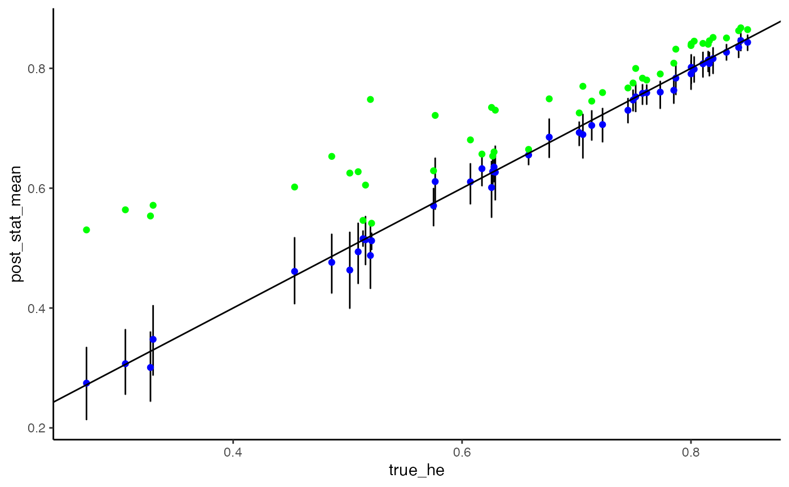

To demonstrate the usage of the package, we can simulate some genotyping data according to our model.
set.seed(17325)
mean_moi <- 4
num_biological_samples <- 100
epsilon_pos <- .05
epsilon_neg <- .05
# Generate the number of alleles at each locus
allele_counts <- c(rep(3, 15), rep(5, 15), rep(10, 15))
# We'll use flat alpha vectors for our draws from the Dirichlet
locus_freq_alphas <- lapply(allele_counts, function(allele) rep(1, allele))
simulated_data <- moire::simulate_data(
mean_moi,
num_biological_samples,
epsilon_pos, epsilon_neg,
locus_freq_alphas = locus_freq_alphas
)Now that we have our data, let’s go ahead and run the MCMC.
burnin <- 1e4
num_samples <- 1e3
mcmc_results <- moire::run_mcmc(
simulated_data$data, simulated_data$sample_ids, simulated_data$loci,
verbose = T, burnin = burnin, samples = num_samples,
adapt_allele_freq_vars = TRUE
)After running the MCMC, we can access the draws from the posterior distribution and analyze.
# Estimate the COI for each sample
coi_summary <- moire::summarize_coi(mcmc_results)
# We can also summarize statistics about the allele frequency distribution
he_summary <- moire::summarize_he(mcmc_results)
allele_freq_summary <- moire::summarize_allele_freqs(mcmc_results)
# Let's append the true values for use later
coi_data <- data.frame(coi_summary,
true_coi = simulated_data$sample_cois
)
he_data <- data.frame(
he_summary,
true_he = sapply(
moire::calculate_naive_allele_frequencies(simulated_data$true_genotypes),
function(x) moire::calculate_he(x)
),
naive_he = sapply(
moire::calculate_naive_allele_frequencies(simulated_data$data),
function(x) moire::calculate_he(x)
)
)
allele_freq_data <- data.frame(
allele_freq_summary,
naive_allele_frequency = unlist(
moire::calculate_naive_allele_frequencies(simulated_data$data)
),
true_allele_frequency = unlist(
moire::calculate_naive_allele_frequencies(simulated_data$true_genotypes)
)
)Here we demonstrate the difference in distribution of the estimate of MOI using our approach vs the naive method of taking the maximum number of alleles observed or the second highest number of alleles observed
coi_estimates <- coi_data %>%
dplyr::select(post_coi_med, naive_coi, offset_naive_coi, true_coi) %>%
tidyr::pivot_longer(tidyr::everything(),
names_to = "estimator",
values_to = "estimate") %>%
dplyr::mutate(estimator_pretty = case_when(
estimator == "post_coi_med" ~ "Median Posterior Est.",
estimator == "naive_coi" ~ "Naive Estimate",
estimator == "offset_naive_coi" ~ "Offset Naive Estimate",
estimator == "true_coi" ~ "True COI")) %>%
transform(estimator_pretty = factor(estimator_pretty, levels = c(
"Median Posterior Est.",
"Offset Naive Estimate",
"Naive Estimate",
"True COI"
)))
ggplot(coi_estimates, aes(x = estimate, stat(count))) +
facet_wrap(~estimator_pretty, nrow = 1) +
geom_bar() +
xlab("Complexity of Infection") +
ylab("Total Count") +
theme_classic(base_size = 12) +
theme(axis.text.x = element_text(angle = 90))
Since we simulated data, we know the true complexity of infection and heterozygosity and can compare
ggplot(coi_data, aes(x = true_coi, y = post_coi_mean)) +
geom_boxplot(aes(group = true_coi), color = "black", alpha = .1) +
geom_jitter(shape = 1, alpha = .5, color = "black", width = .1, height = .1) +
geom_jitter(aes(y = naive_coi), color = "red",
alpha = .25, width = .1, height = .1) +
geom_jitter(aes(y = offset_naive_coi), color = "green",
alpha = .25, width = .1, height = .1) +
geom_abline(slope = 1, intercept = 0) +
ylab("Mean Posterior COI") +
xlab("True COI") +
theme_classic(base_size = 12) +
expand_limits(x = 0, y = 0) +
ggtitle("Estimates of COI vs Truth")
ggplot(he_data, aes(x = loci)) +
geom_errorbar(aes(y = post_stat_mean,
ymax = post_stat_upper,
ymin = post_stat_lower)) +
geom_point(aes(y = post_stat_mean), color = "blue") +
geom_point(aes(y = true_he), color = "red") +
geom_point(aes(y = naive_he), color = "green") +
ggtitle("Estimate of Heterozygosity") +
xlab("Locus") +
ylab("Mean Posterior Heterozygosity") +
expand_limits(y = .5) +
theme_classic() +
theme(axis.text.x = element_text(angle = 90))
ggplot(he_data, aes(x = true_he)) +
geom_errorbar(aes(y = post_stat_mean, ymax = post_stat_upper, ymin = post_stat_lower)) +
geom_point(aes(y = post_stat_mean), color = "blue") +
geom_point(aes(y = naive_he), color = "green") +
geom_abline(slope = 1, intercept = 0) +
theme_classic()
ggplot(allele_freq_data) +
geom_errorbar(aes(
y = post_allele_freqs_mean,
x = true_allele_frequency,
ymax = post_allele_freqs_upper,
ymin = post_allele_freqs_lower)) +
geom_point(aes(y = post_allele_freqs_mean, x = true_allele_frequency)) +
geom_point(aes(y = naive_allele_frequency, x = true_allele_frequency), color = "red", alpha = .3) +
geom_abline(slope = 1, intercept = 0) +
ylab("Mean Posterior Freqeuncy") +
xlab("True Frequency") +
theme_classic(base_size = 12) +
expand_limits(x = 0, y = 0) +
ggtitle("Estimates of Allele Frequencies vs Truth")